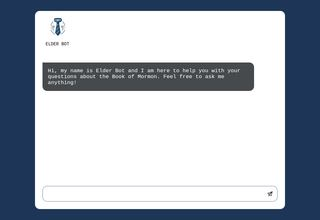
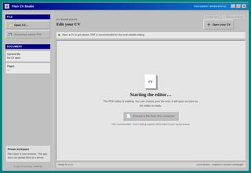
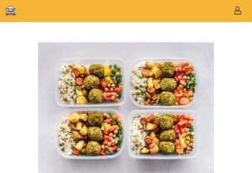
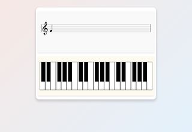
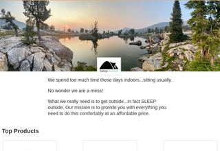
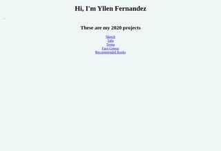
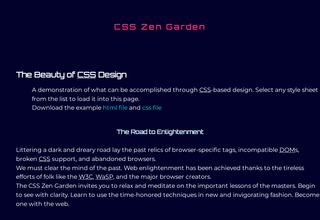
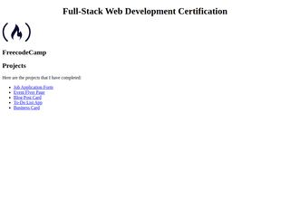
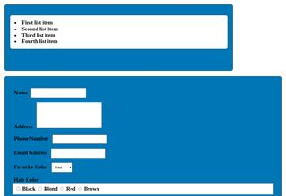

Welcome!
Hi, I'm Yllen. Thanks for stopping by my little corner of the web. Below is everything I've built over the years, from university coursework to the tools I run at home. Wherever possible you can try the project right in your browser or download it; the rest link to their source code.
Last updated: 13 November 2026 | 29 projects listed
Try it online
Front-end projects that run entirely in your browser.
 |
Elder BotA chatbot that answers questions about the Book of Mormon, using LangChain, OpenAI and Supabase vector search. Independent project, not affiliated with the Church. |
 |
CV Studio new!Open, edit and download your CV as a PDF, with a classic desktop-publishing look. Built on Apryse WebViewer. |
 |
Recipe AppBrowse vegetarian, vegan, keto and paleo recipes from the Spoonacular API, sign up with Firebase and save your favourites. |
 |
Piano FlashcardsPractise reading sheet music: a note appears on the staff and you play it on the on-screen keyboard. |
 |
Sleep OutsideAn outdoor-gear store with product listings, product pages, a cart and checkout. Team project for WDD 330. |
 |
JavaScript Playground (2020)Small vanilla-JS experiments from Wes Bos' course: an Etch-a-Sketch, tabs, a terms scroller, a face censor, a currency converter, a dad-joke fetcher and more. |
 |
CSS Zen GardenMy take on the classic CSS Zen Garden: a fixed HTML page restyled purely with SCSS. |
Advanced CSS courseworkWeekly assignments from BYU-I's Advanced CSS class: optimisation, Sass, linting, icon fonts and CSS Grid layouts. |
|
 |
freeCodeCamp projectsCertification projects: a job application form, an event flyer, a blog post card, a to-do list and a business card. |
 |
HTML forms (group assignment)A form-styling group exercise from CS 213 at BYU-I. |
Web apps & APIs
Full-stack apps with a server and database. They run on free hosting that naps when idle, so the first visit can take about 30 seconds to wake up. Demo data resets on restart.
PHP |
PHP MotorsA car dealership site with an inventory, vehicle detail pages, user accounts, reviews and an admin area for uploading images. Built for CSE 340. |
API |
VoltAPIAn open-source REST API that scrapes electricity tariffs from Spanish providers (Iberdrola, Endesa, Pepe Energy) for Home Assistant sensors. |
Py |
Hair AdvisorA privacy-first hair-care advisor: rules-based advice out of the box, with optional photo-aware tips from a self-hosted vision model. Photos are never stored. Launch » private repo |
.NET |
Contoso UniversityStudents, courses, instructors and departments with sorting, filtering, paging and concurrency handling. Launch » private repo |
.NET |
My Scripture JournalKeep notes on scripture passages and filter them by book. Launch » private repo |
.NET |
MVC MovieA movie catalogue with genre filtering, search, ratings and poster images. Launch » private repo |
.NET |
Razor Pages MovieThe same movie catalogue built the Razor Pages way, with validation and data annotations. Launch » private repo |
API |
BookStore APIA CRUD web API for books, backed by MongoDB (in-memory store for the demo). Try it from the Swagger page. Open Swagger » private repo |
Downloads
Android and desktop apps. Android APKs install once you allow "unknown sources"; Windows builds are zip files, so unzip and run the .exe.
| Program | What it is | Platform | |
|---|---|---|---|
| Madrid Recicla | Scan a piece of waste to find the right bin, and find nearby Puntos Limpios on a map. Kotlin + Jetpack Compose + Gemini. | Android | Download |
| Mobile Shop | A shopping app with products, a cart, checkout, chat and notifications on Firebase. Java. | Android | Download |
| Volunteering App | Helps people find local associations and track their volunteering hours. Java + Firebase. | Android | source build soon |
| MegaDesk | Desk price quotes by size, drawers, material and rush order, saved and searchable. C# Windows Forms. | Windows | Download |
| Math Quiz | A timed arithmetic quiz game. C# Windows Forms, from CIT 365. | Windows | Download |
| Asteroids | Shoot asteroids that split into smaller pieces. Python + Arcade. | Windows | Download |
| Frogger | Cross the road, dodge cars and grab coins. Team final project for CSE 210. Python + Arcade. | Windows | Download |
Source code
Scripts, console programs and work in progress that you run yourself.
- Job Listing Automation: finds job posts via the Google Search API, stores them in Airtable and publishes them to a Jboard site. Python
- CSE 210 team games: console and terminal games built as a team: Jumper, Dice, Robot Finds Kitten, Speed, Snake, Mastermind and Tic-Tac-Toe. Python
- Fight Game: a 2D battle game, still under construction. Python + Pygame
- Notes: a cross-platform note-taking app for Android and iOS. C# + Xamarin.Forms private repo
Writing
Contact
The best way to reach me is by e-mail: yllenfernandez@gmail.com. You can also find me on LinkedIn or GitHub.